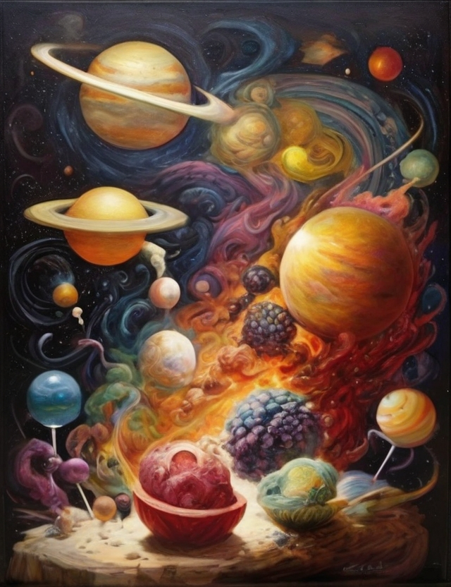

Info du jour

Nouvelle découverte d'ingrédients Galactic:
- Éclats de Luminaria: Ces cristaux lumineux, récoltés sur une lointaine planète, émettent une lueur subtile tout en ajoutant une saveur éthérée à n'importe quel plat.
- Nébuleuse de Saphir: Une substance gazeuse extraite d'une nébuleuse lointaine, la Nébuleuse de Saphir ajoute une touche de couleur mystique et une saveur douce-fruitée à vos créations.
- Poussière d'Astéroïde Caramelisée: Cette délicate poussière dorée provient d'astéroïdes sucrés, ajoutant une touche sucrée et croquante aux desserts et aux plats exotiques.
- Écailles d'Éclipse Marine: Provenant d'une créature marine interstellaire, ces écailles iridescentes ajoutent une saveur umami unique et une texture délicate aux plats de fruits de mer.
- Graines de Nova Épicée: Cultivées sur une planète éloignée exposée aux radiations stellaires, ces graines ajoutent un piquant extraterrestre à n'importe quel plat.
- ÉtherVanille: Une vanille spéciale cultivée dans des conditions atmosphériques uniques sur une planète lointaine, l'ÉtherVanille donne une saveur douce et exotique aux desserts.
- Pétale de Quasar Sucré: Ces pétales sucrés sont récoltés à partir de fleurs qui poussent uniquement près des trous de ver sucrés, ajoutant une saveur florale sucrée à vos créations.